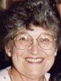

|
| August 1, 2006 - Brad Wogsland writes about his excitement at finding Wogsland.org atop Google's search results for "Wogsland" and how that inspired him to complie a list of Random Wogslands he's found on the internet over the years. |
| August 30, 2005 - Brad Wogsland writes about his admiration for Richard Feynman and reading Feynman's recently published correspondence. This reminded him of his grandfather Neal's correspondence and how reading those letters while in high school allowed him to get to know his grandfather better. |
July 19, 2005 - Are you in need a pretty illustration of a flower, some webdesign work, or perhaps a new apartment building? Then check out the new link at left to family businesses. As always, any family member is welcome to send me their business' website so I can add it.
| July 12, 2005 - Apparently cousin Howie has his own little place on the internet. Howie writes alot about his love of music and what he thinks about different bands. Well, he got noticed by the Ford Motor Company. They're giving a series of free concerts called Fusion Flash Concerts to promote the Ford Fusion, and Howie's doing the blog for their website. Kudos to Howie. |
| June 30, 2005 - Curious about the newest branch of our family, the Golshanis? Amir has provided quite a bit of genealogical information for the site. |
|  | June 10th, 2005 - Mary Dell Wogsland writes about some memories of when she met her husband Neal and the blessings of her family. |
June 3rd, 2005 - Welcome to Wogsland.org! The purpose of Wogsland.org is to link our family together through the internet. As with any family, not everyone has the same lastname. Wogsland is obtuse enough that Wogsland.org is still available as a domain name, and it also happens to be the last name of the starter of this page. Nevertheless, this webpage is intended to link the whole family - which for the most part aren't Wogslands!
At left you'll find links to the webpages of family members. If you've got a webpage and would like to be included in this list, email me.
Also at left are some other family-style links. The only one with a lot of content right now is Genealogy. This links to genealogical work on the family compiled mainly from previous work by our ancestors, especially Neal Wogsland and Virginia Craig, which used to be on my homepage. Again, if you're not in there and you should be, email me. The other links, to Articles, Memories and Recipes are for YOU to fill! Have you ever wanted to write an article about something? Email it to me and I'll put it up here for the rest of the family and the world to ponder. Do you have a great recipe you'd like to share? Email it to me and I'll put it up here for the rest of the family and the world to enjoy. The memories section is a chance for you to take part in recording family history. Genealogy is more than just dates and names, it's the story of our past. Email me your recollections of people or events that were important in YOUR life, and help write our history!